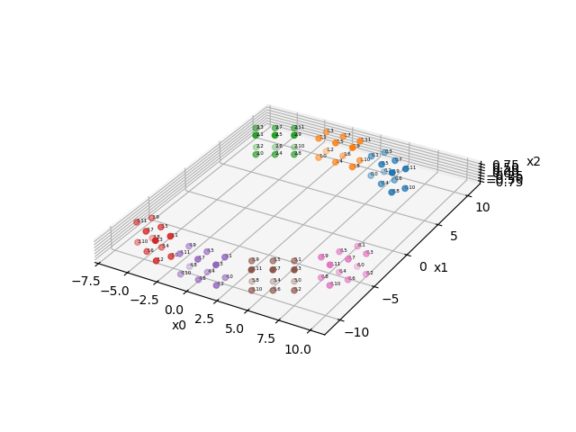
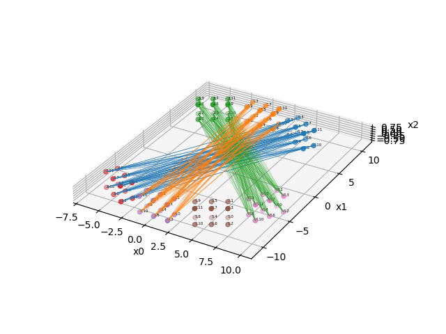
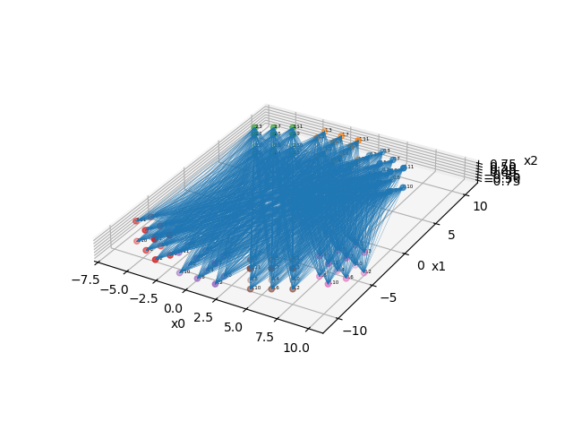

Note
Go to the end to download the full example code.
Modularized (block) PET scanner geometry
In this example, we show how to setup a generic PET scanner consisting of multiple block modules where each block module consists of a regular grid of LOR endpoints. We also show how to define a LOR descriptor for this geometry using a description of which block pairs are in coincidence.
Tip
parallelproj is python array API compatible meaning it supports different
array backends (e.g. numpy, cupy, torch, …) and devices (CPU or GPU).
Choose your preferred array API xp and device dev below.
21 import array_api_compat.numpy as xp
22
23 # import array_api_compat.cupy as xp
24 # import array_api_compat.torch as xp
25
26 import parallelproj
27 import matplotlib.pyplot as plt
28 import math
29
30 # choose a device (CPU or CUDA GPU)
31 if "numpy" in xp.__name__:
32 # using numpy, device must be cpu
33 dev = "cpu"
34 elif "cupy" in xp.__name__:
35 # using cupy, only cuda devices are possible
36 dev = xp.cuda.Device(0)
37 elif "torch" in xp.__name__:
38 # using torch valid choices are 'cpu' or 'cuda'
39 dev = "cuda"
input paraters
44 # grid shape of LOR endpoints forming a block module
45 block_shape = (3, 2, 2)
46 # spacing between LOR endpoints in a block module
47 block_spacing = (1.5, 1.2, 1.7)
48 # radius of the scanner
49 scanner_radius = 10
Setup of a modularized PET scanner geometry
We define 7 block modules arranged in a circle with a radius of 10. The arangement follows a regular polygon with 12 sides, leaving some of the sides empty. Note that all block modules must be identical, but can be anywhere in space. The location of a block module can be changed using an affine transformation matrix.
61 mods = []
62
63 delta_phi = 2 * xp.pi / 12
64
65 # setup an affine transformation matrix to translate the block modules from the
66 # center to the radius of the scanner
67 aff_mat_trans = xp.eye(4, device=dev)
68 aff_mat_trans[1, -1] = scanner_radius
69
70 for phi in [
71 -delta_phi,
72 0,
73 delta_phi,
74 5 * delta_phi,
75 6 * delta_phi,
76 7 * delta_phi,
77 8 * delta_phi,
78 ]:
79 # setup an affine transformation matrix to rotate the block modules around the center
80 # (of the "2" axis)
81 aff_mat_rot = xp.asarray(
82 [
83 [math.cos(phi), -math.sin(phi), 0, 0],
84 [math.sin(phi), math.cos(phi), 0, 0],
85 [0, 0, 1, 0],
86 [0, 0, 0, 1],
87 ]
88 )
89 mods.append(
90 parallelproj.BlockPETScannerModule(
91 xp,
92 dev,
93 block_shape,
94 block_spacing,
95 affine_transformation_matrix=(aff_mat_rot @ aff_mat_trans),
96 )
97 )
98
99 # create the scanner geometry from a list of identical block modules at
100 # different locations in space
101 scanner = parallelproj.ModularizedPETScannerGeometry(mods)
Show the scanner geometry consisting of 7 block modules
106 fig = plt.figure(tight_layout=True)
107 ax = fig.add_subplot(111, projection="3d")
108 scanner.show_lor_endpoints(ax, annotation_fontsize=4, show_linear_index=False)
109 fig.show()

Setup of a LOR descriptor consisting of block pairs
Once the geometry of the LOR endpoints is defined, we can define the LORs by specifying which block pairs are in coincidence and for “valid” LORs. To do this, we have manually define a list containing pairs of block numbers. Here, we define 12 block pairs. Note that more pairs would be possible.
120 lor_desc = parallelproj.EqualBlockPETLORDescriptor(
121 scanner,
122 xp.asarray(
123 [
124 [0, 3],
125 [0, 4],
126 [0, 5],
127 [0, 6],
128 [1, 3],
129 [1, 4],
130 [1, 5],
131 [1, 6],
132 [2, 3],
133 [2, 4],
134 [2, 5],
135 [2, 6],
136 ]
137 ),
138 )
Visualize all LORs of 3 block pairs block pair 0: connecting block 0 and block 3 block pair 5: connecting block 1 and block 4 block pair 11: connecting block 2 and block 6
146 fig2 = plt.figure(tight_layout=True)
147 ax2 = fig2.add_subplot(111, projection="3d")
148 scanner.show_lor_endpoints(ax2, annotation_fontsize=4, show_linear_index=False)
149 lor_desc.show_block_pair_lors(
150 ax2, block_pair_nums=xp.asarray([0], device=dev), color=plt.cm.tab10(0)
151 )
152 lor_desc.show_block_pair_lors(
153 ax2, block_pair_nums=xp.asarray([5], device=dev), color=plt.cm.tab10(1)
154 )
155 lor_desc.show_block_pair_lors(
156 ax2, block_pair_nums=xp.asarray([11], device=dev), color=plt.cm.tab10(2)
157 )
158 fig2.show()

Visualize all LORs of all defined block pairs
163 fig3 = plt.figure(tight_layout=True)
164 ax3 = fig3.add_subplot(111, projection="3d")
165 scanner.show_lor_endpoints(ax3, annotation_fontsize=4, show_linear_index=False)
166 lor_desc.show_block_pair_lors(ax3, block_pair_nums=None, color=plt.cm.tab10(0))
167 fig3.show()

We can get the start and end coordinates of LORs for a specific block pair or for all block pairs.
173 # get the start and end coordinates of all LORs in block pair 0 (connecting block 0 and block 3)
174 xstart0, xend0 = lor_desc.get_lor_coordinates(xp.asarray([0], device=dev))
175
176 # get the start and end coordinates of all LORs in block pair 4 (connecting block 1 and block 3)
177 xstart3, xend3 = lor_desc.get_lor_coordinates(xp.asarray([4], device=dev))
178
179 # get the start and end coordinates of all LORs of all block pairs
180 xstart, xend = lor_desc.get_lor_coordinates()
Total running time of the script: (0 minutes 0.597 seconds)
Related examples

Non-TOF and TOF projections using a modularized (block) PET scanner geometry